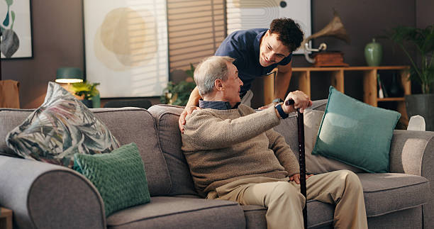

Dignidade e Companhia para Quem Mais Experiência Tem
Nossa missão é levar afeto, companhia e assistência para idosos em asilos e residenciais, garantindo que a terceira idade seja vivida com alegria e respeito.

Nosso Impacto em Números
+50
Idosos Visitados Semanalmente
+100
Voluntários Ativos
+2000
Horas de Companhia em 2025
Nossa História
A "Laços de Ouro" foi fundada em 2025 por um grupo de voluntários...
O Que Dizem Sobre Nós
"Ser voluntária na Laços de Ouro mudou minha perspectiva..."
"Desde que as visitas começaram, minha mãe está muito mais feliz..."
Faça a Diferença!
Sua doação nos ajuda a continuar nosso trabalho...